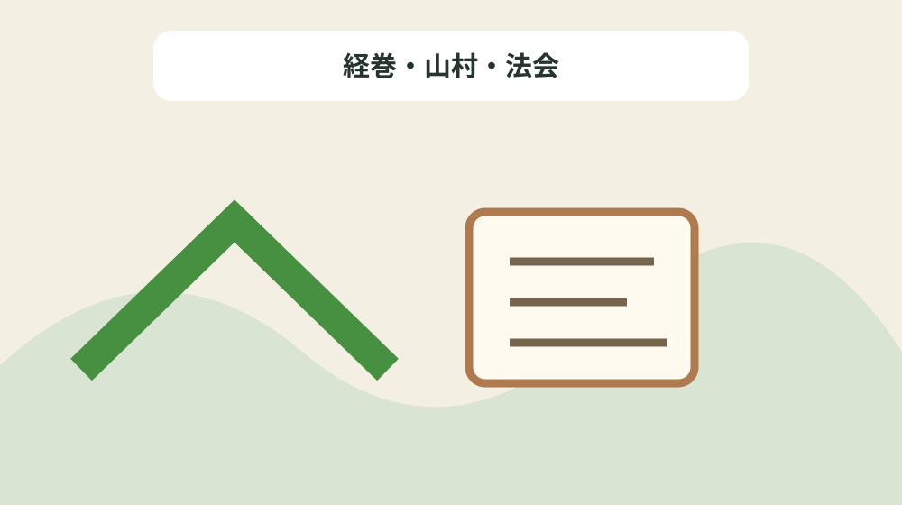
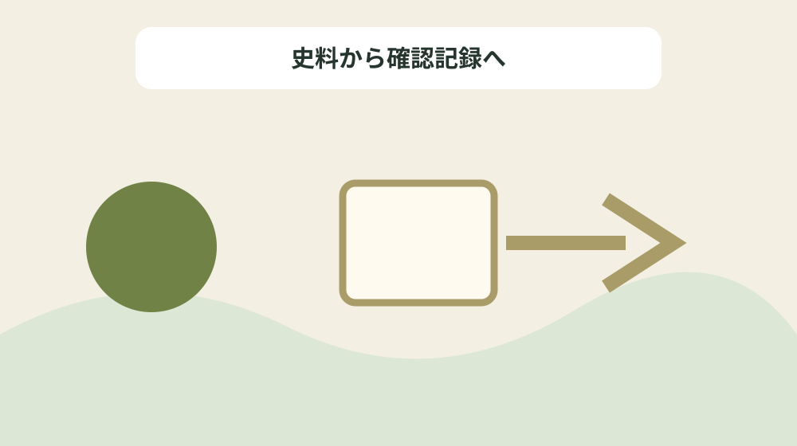

田能天王社大般若経を巻数・書写年・寄進者・法会で読む
結論：経巻、書写年、記名、所蔵、法会、指定区分を分けて残すことで、資料の記載と現在の状態を混同しない田能大般若経巻別台帳になります。
田能大般若経巻別台帳で解く問い
森町公式資料には「14世紀は、1333年(元弘3年)の鎌倉幕府滅亡、後醍醐天皇による「建武の新政」・南北朝の争乱と合一(1392年<明徳3年>)と次々に大きな事件が起こった。」と記されています。田能天王社大般若経を巻数・書写年・寄進者・法会で読むでは、この記載を田能大般若経巻別台帳の一行にし、経巻、書写年、記名、所蔵、法会、指定区分を分けて残すための根拠として扱います。資料名と確認日を先に書き、後から説明だけが独り歩きしないようにします。
同じページで確認できる「南北朝期の1384年(永徳4年)〜1387年(嘉慶元年)にかけて、三倉郷 田能 ( たのう ) 「天王社」の大般若経600巻が書写された。」は、前の事実と似ていても別の対象です。経巻・山村・法会を読み解くときは、資料の掲載順ではなく、名称・年代・場所・根拠の対応を見ます。写真、家族の記憶、公的資料を三列に分け、食い違いを未確認として残します。
田能大般若経巻別台帳では「のちの飯田郷領主山内氏はこの所領を受け継いでいる(系譜的関係は明確ではない)。」の確認欄と「これは現在町域に残っている確実な最古の文字資料で、御経を書写した人物・寺社名・所在地名・金銭等を援助した人物等が記載されており貴重な資料である。」の照会欄を分けます。公式本文が述べていない現況や公開可否は未確認と書き、家族の記憶には話者と聞取日を添えます。旧記録を消さず、回答日と確認先を付けた新しい行を追加します。
公式本文から確定できる十二事実
森町公式資料には「1351年(正平6年)周防国(山口県)の常陸親王(南朝の皇子)の許に一宮社の関係者と思われる「一宮(いちのみや)源蔵人大夫(みなもとのくろうどだゆう)入道(にゅうどう)」が従っている。」と記されています。田能天王社大般若経を巻数・書写年・寄進者・法会で読むでは、この記載を田能大般若経巻別台帳の一行にし、経巻、書写年、記名、所蔵、法会、指定区分を分けて残すための根拠として扱います。主語と対象を原文へ戻し、似た地名や人物を同じものとして扱いません。
同じページで確認できる「(1)田能の集落。中央の美山は白山で、手前に集落が見える。 田能は田尾(たお)で山の窪んだところを意味し、春埜山・大日山・秋葉山などの北遠霊山への中継地として栄えた。」は、前の事実と似ていても別の対象です。経巻・山村・法会を読み解くときは、資料の掲載順ではなく、名称・年代・場所・根拠の対応を見ます。資料の利点は典拠へ戻れることにあり、現在の状態を保証するものではありません。
田能大般若経巻別台帳では「南北朝期の1384年(永徳4年)〜1387年(嘉慶元年)にかけて、三倉郷 田能 ( たのう ) 「天王社」の大般若経600巻が書写された。」の確認欄と「(2)大般若経。全六百巻が残されており、古態(こたい)を残す巻子本である。 現在、静岡県指定文化財で、近隣では、岩室寺(森町・豊岡村) ・ 一宮天満宮や春野町の大時(おおとき)でも書写されたことが確認されている。 (森町三倉 蔵泉寺所蔵)」の照会欄を分けます。公式本文が述べていない現況や公開可否は未確認と書き、家族の記憶には話者と聞取日を添えます。不動産の道路、境界、登記、建物安全性は、この歴史資料とは別に調べます。
田能大般若経巻別台帳の列を決める
森町公式資料には「これは現在町域に残っている確実な最古の文字資料で、御経を書写した人物・寺社名・所在地名・金銭等を援助した人物等が記載されており貴重な資料である。」と記されています。田能天王社大般若経を巻数・書写年・寄進者・法会で読むでは、この記載を田能大般若経巻別台帳の一行にし、経巻、書写年、記名、所蔵、法会、指定区分を分けて残すための根拠として扱います。年号の横へ出来事を示す動詞を残し、制作年と伝来年を一つにしません。
同じページで確認できる「1351年(正平6年)周防国(山口県)の常陸親王(南朝の皇子)の許に一宮社の関係者と思われる「一宮(いちのみや)源蔵人大夫(みなもとのくろうどだゆう)入道(にゅうどう)」が従っている。」は、前の事実と似ていても別の対象です。経巻・山村・法会を読み解くときは、資料の掲載順ではなく、名称・年代・場所・根拠の対応を見ます。不足する情報を空欄の理由として残し、推測で表を完成させません。
田能大般若経巻別台帳では「今川氏は守護権限を最大に活用して、遠江の武士を権力機構に組み込んでいった。」の確認欄と「また、この頃一宮庄大田郷(おおたのごう)一藤名(いちふじみょう)は少貳(しょうに)氏の所領となっている。」の照会欄を分けます。公式本文が述べていない現況や公開可否は未確認と書き、家族の記憶には話者と聞取日を添えます。まだ売ると決めていない段階でも、資料の所在と根拠を家族で共有できます。

年代の種類を動詞で分ける
森町公式資料には「やがて、15世紀初頭、守護職は斯波氏(しばし)に交替し、以降、1世紀にわたる支配が開始された。」と記されています。田能天王社大般若経を巻数・書写年・寄進者・法会で読むでは、この記載を田能大般若経巻別台帳の一行にし、経巻、書写年、記名、所蔵、法会、指定区分を分けて残すための根拠として扱います。所在地が示されても見学可能とは限らないため、公開条件を別に確認します。
同じページで確認できる「今川氏は守護権限を最大に活用して、遠江の武士を権力機構に組み込んでいった。」は、前の事実と似ていても別の対象です。経巻・山村・法会を読み解くときは、資料の掲載順ではなく、名称・年代・場所・根拠の対応を見ます。問い合わせは対象名、参照ページ、確認済みの事実、知りたい一点に絞ります。
田能大般若経巻別台帳では「(2)大般若経。全六百巻が残されており、古態(こたい)を残す巻子本である。 現在、静岡県指定文化財で、近隣では、岩室寺(森町・豊岡村) ・ 一宮天満宮や春野町の大時(おおとき)でも書写されたことが確認されている。 (森町三倉 蔵泉寺所蔵)」の確認欄と「やがて、15世紀初頭、守護職は斯波氏(しばし)に交替し、以降、1世紀にわたる支配が開始された。」の照会欄を分けます。公式本文が述べていない現況や公開可否は未確認と書き、家族の記憶には話者と聞取日を添えます。最初の一行から始め、十二事実を同時に確定しようとしないことが継続の要点です。
場所・所蔵・公開条件を混同しない
森町公式資料には「14世紀は、1333年(元弘3年)の鎌倉幕府滅亡、後醍醐天皇による「建武の新政」・南北朝の争乱と合一(1392年<明徳3年>)と次々に大きな事件が起こった。」と記されています。田能天王社大般若経を巻数・書写年・寄進者・法会で読むでは、この記載を田能大般若経巻別台帳の一行にし、経巻、書写年、記名、所蔵、法会、指定区分を分けて残すための根拠として扱います。写真、家族の記憶、公的資料を三列に分け、食い違いを未確認として残します。
同じページで確認できる「飯田荘加保村等の地頭であった備後の山内通継は、足利尊氏軍に従い、各地を転戦した。」は、前の事実と似ていても別の対象です。経巻・山村・法会を読み解くときは、資料の掲載順ではなく、名称・年代・場所・根拠の対応を見ます。旧記録を消さず、回答日と確認先を付けた新しい行を追加します。
田能大般若経巻別台帳では「のちの飯田郷領主山内氏はこの所領を受け継いでいる(系譜的関係は明確ではない)。」の確認欄と「のちの飯田郷領主山内氏はこの所領を受け継いでいる(系譜的関係は明確ではない)。」の照会欄を分けます。公式本文が述べていない現況や公開可否は未確認と書き、家族の記憶には話者と聞取日を添えます。資料名と確認日を先に書き、後から説明だけが独り歩きしないようにします。
良い点
森町公式資料には「1351年(正平6年)周防国(山口県)の常陸親王(南朝の皇子)の許に一宮社の関係者と思われる「一宮(いちのみや)源蔵人大夫(みなもとのくろうどだゆう)入道(にゅうどう)」が従っている。」と記されています。田能天王社大般若経を巻数・書写年・寄進者・法会で読むでは、この記載を田能大般若経巻別台帳の一行にし、経巻、書写年、記名、所蔵、法会、指定区分を分けて残すための根拠として扱います。資料の利点は典拠へ戻れることにあり、現在の状態を保証するものではありません。
同じページで確認できる「これは現在町域に残っている確実な最古の文字資料で、御経を書写した人物・寺社名・所在地名・金銭等を援助した人物等が記載されており貴重な資料である。」は、前の事実と似ていても別の対象です。経巻・山村・法会を読み解くときは、資料の掲載順ではなく、名称・年代・場所・根拠の対応を見ます。不動産の道路、境界、登記、建物安全性は、この歴史資料とは別に調べます。
田能大般若経巻別台帳では「南北朝期の1384年(永徳4年)〜1387年(嘉慶元年)にかけて、三倉郷 田能 ( たのう ) 「天王社」の大般若経600巻が書写された。」の確認欄と「大般若経は災いを除き、天下太平・国土安寧などに効力があると信じられ、中世では転読(てんどく)が社寺の年中行事に組み込まれていた。」の照会欄を分けます。公式本文が述べていない現況や公開可否は未確認と書き、家族の記憶には話者と聞取日を添えます。主語と対象を原文へ戻し、似た地名や人物を同じものとして扱いません。
注文したい点
森町公式資料には「これは現在町域に残っている確実な最古の文字資料で、御経を書写した人物・寺社名・所在地名・金銭等を援助した人物等が記載されており貴重な資料である。」と記されています。田能天王社大般若経を巻数・書写年・寄進者・法会で読むでは、この記載を田能大般若経巻別台帳の一行にし、経巻、書写年、記名、所蔵、法会、指定区分を分けて残すための根拠として扱います。不足する情報を空欄の理由として残し、推測で表を完成させません。
同じページで確認できる「(2)大般若経。全六百巻が残されており、古態(こたい)を残す巻子本である。 現在、静岡県指定文化財で、近隣では、岩室寺(森町・豊岡村) ・ 一宮天満宮や春野町の大時(おおとき)でも書写されたことが確認されている。 (森町三倉 蔵泉寺所蔵)」は、前の事実と似ていても別の対象です。経巻・山村・法会を読み解くときは、資料の掲載順ではなく、名称・年代・場所・根拠の対応を見ます。まだ売ると決めていない段階でも、資料の所在と根拠を家族で共有できます。
田能大般若経巻別台帳では「今川氏は守護権限を最大に活用して、遠江の武士を権力機構に組み込んでいった。」の確認欄と「14世紀は、1333年(元弘3年)の鎌倉幕府滅亡、後醍醐天皇による「建武の新政」・南北朝の争乱と合一(1392年<明徳3年>)と次々に大きな事件が起こった。」の照会欄を分けます。公式本文が述べていない現況や公開可否は未確認と書き、家族の記憶には話者と聞取日を添えます。年号の横へ出来事を示す動詞を残し、制作年と伝来年を一つにしません。
対案・結論
森町公式資料には「やがて、15世紀初頭、守護職は斯波氏(しばし)に交替し、以降、1世紀にわたる支配が開始された。」と記されています。田能天王社大般若経を巻数・書写年・寄進者・法会で読むでは、この記載を田能大般若経巻別台帳の一行にし、経巻、書写年、記名、所蔵、法会、指定区分を分けて残すための根拠として扱います。問い合わせは対象名、参照ページ、確認済みの事実、知りたい一点に絞ります。
同じページで確認できる「また、この頃一宮庄大田郷(おおたのごう)一藤名(いちふじみょう)は少貳(しょうに)氏の所領となっている。」は、前の事実と似ていても別の対象です。経巻・山村・法会を読み解くときは、資料の掲載順ではなく、名称・年代・場所・根拠の対応を見ます。最初の一行から始め、十二事実を同時に確定しようとしないことが継続の要点です。
田能大般若経巻別台帳では「(2)大般若経。全六百巻が残されており、古態(こたい)を残す巻子本である。 現在、静岡県指定文化財で、近隣では、岩室寺(森町・豊岡村) ・ 一宮天満宮や春野町の大時(おおとき)でも書写されたことが確認されている。 (森町三倉 蔵泉寺所蔵)」の確認欄と「南北朝期の1384年(永徳4年)〜1387年(嘉慶元年)にかけて、三倉郷 田能 ( たのう ) 「天王社」の大般若経600巻が書写された。」の照会欄を分けます。公式本文が述べていない現況や公開可否は未確認と書き、家族の記憶には話者と聞取日を添えます。所在地が示されても見学可能とは限らないため、公開条件を別に確認します。

家族に残す確認記録
森町公式資料には「14世紀は、1333年(元弘3年)の鎌倉幕府滅亡、後醍醐天皇による「建武の新政」・南北朝の争乱と合一(1392年<明徳3年>)と次々に大きな事件が起こった。」と記されています。田能天王社大般若経を巻数・書写年・寄進者・法会で読むでは、この記載を田能大般若経巻別台帳の一行にし、経巻、書写年、記名、所蔵、法会、指定区分を分けて残すための根拠として扱います。旧記録を消さず、回答日と確認先を付けた新しい行を追加します。
同じページで確認できる「やがて、15世紀初頭、守護職は斯波氏(しばし)に交替し、以降、1世紀にわたる支配が開始された。」は、前の事実と似ていても別の対象です。経巻・山村・法会を読み解くときは、資料の掲載順ではなく、名称・年代・場所・根拠の対応を見ます。資料名と確認日を先に書き、後から説明だけが独り歩きしないようにします。
田能大般若経巻別台帳では「のちの飯田郷領主山内氏はこの所領を受け継いでいる(系譜的関係は明確ではない)。」の確認欄と「(1)田能の集落。中央の美山は白山で、手前に集落が見える。 田能は田尾(たお)で山の窪んだところを意味し、春埜山・大日山・秋葉山などの北遠霊山への中継地として栄えた。」の照会欄を分けます。公式本文が述べていない現況や公開可否は未確認と書き、家族の記憶には話者と聞取日を添えます。写真、家族の記憶、公的資料を三列に分け、食い違いを未確認として残します。
現地確認と権利資料を分ける
森町公式資料には「1351年(正平6年)周防国(山口県)の常陸親王(南朝の皇子)の許に一宮社の関係者と思われる「一宮(いちのみや)源蔵人大夫(みなもとのくろうどだゆう)入道(にゅうどう)」が従っている。」と記されています。田能天王社大般若経を巻数・書写年・寄進者・法会で読むでは、この記載を田能大般若経巻別台帳の一行にし、経巻、書写年、記名、所蔵、法会、指定区分を分けて残すための根拠として扱います。不動産の道路、境界、登記、建物安全性は、この歴史資料とは別に調べます。
同じページで確認できる「のちの飯田郷領主山内氏はこの所領を受け継いでいる(系譜的関係は明確ではない)。」は、前の事実と似ていても別の対象です。経巻・山村・法会を読み解くときは、資料の掲載順ではなく、名称・年代・場所・根拠の対応を見ます。主語と対象を原文へ戻し、似た地名や人物を同じものとして扱いません。
田能大般若経巻別台帳では「南北朝期の1384年(永徳4年)〜1387年(嘉慶元年)にかけて、三倉郷 田能 ( たのう ) 「天王社」の大般若経600巻が書写された。」の確認欄と「1351年(正平6年)周防国(山口県)の常陸親王(南朝の皇子)の許に一宮社の関係者と思われる「一宮(いちのみや)源蔵人大夫(みなもとのくろうどだゆう)入道(にゅうどう)」が従っている。」の照会欄を分けます。公式本文が述べていない現況や公開可否は未確認と書き、家族の記憶には話者と聞取日を添えます。資料の利点は典拠へ戻れることにあり、現在の状態を保証するものではありません。
大石の視点
森町公式資料には「これは現在町域に残っている確実な最古の文字資料で、御経を書写した人物・寺社名・所在地名・金銭等を援助した人物等が記載されており貴重な資料である。」と記されています。田能天王社大般若経を巻数・書写年・寄進者・法会で読むでは、この記載を田能大般若経巻別台帳の一行にし、経巻、書写年、記名、所蔵、法会、指定区分を分けて残すための根拠として扱います。まだ売ると決めていない段階でも、資料の所在と根拠を家族で共有できます。
同じページで確認できる「大般若経は災いを除き、天下太平・国土安寧などに効力があると信じられ、中世では転読(てんどく)が社寺の年中行事に組み込まれていた。」は、前の事実と似ていても別の対象です。経巻・山村・法会を読み解くときは、資料の掲載順ではなく、名称・年代・場所・根拠の対応を見ます。年号の横へ出来事を示す動詞を残し、制作年と伝来年を一つにしません。
田能大般若経巻別台帳では「今川氏は守護権限を最大に活用して、遠江の武士を権力機構に組み込んでいった。」の確認欄と「今川氏は守護権限を最大に活用して、遠江の武士を権力機構に組み込んでいった。」の照会欄を分けます。公式本文が述べていない現況や公開可否は未確認と書き、家族の記憶には話者と聞取日を添えます。不足する情報を空欄の理由として残し、推測で表を完成させません。
まとめ
森町公式資料には「やがて、15世紀初頭、守護職は斯波氏(しばし)に交替し、以降、1世紀にわたる支配が開始された。」と記されています。田能天王社大般若経を巻数・書写年・寄進者・法会で読むでは、この記載を田能大般若経巻別台帳の一行にし、経巻、書写年、記名、所蔵、法会、指定区分を分けて残すための根拠として扱います。最初の一行から始め、十二事実を同時に確定しようとしないことが継続の要点です。
同じページで確認できる「14世紀は、1333年(元弘3年)の鎌倉幕府滅亡、後醍醐天皇による「建武の新政」・南北朝の争乱と合一(1392年<明徳3年>)と次々に大きな事件が起こった。」は、前の事実と似ていても別の対象です。経巻・山村・法会を読み解くときは、資料の掲載順ではなく、名称・年代・場所・根拠の対応を見ます。所在地が示されても見学可能とは限らないため、公開条件を別に確認します。
田能大般若経巻別台帳では「(2)大般若経。全六百巻が残されており、古態(こたい)を残す巻子本である。 現在、静岡県指定文化財で、近隣では、岩室寺(森町・豊岡村) ・ 一宮天満宮や春野町の大時(おおとき)でも書写されたことが確認されている。 (森町三倉 蔵泉寺所蔵)」の確認欄と「飯田荘加保村等の地頭であった備後の山内通継は、足利尊氏軍に従い、各地を転戦した。」の照会欄を分けます。公式本文が述べていない現況や公開可否は未確認と書き、家族の記憶には話者と聞取日を添えます。問い合わせは対象名、参照ページ、確認済みの事実、知りたい一点に絞ります。
よくある質問
田能大般若経巻別台帳で最初に書く項目は何ですか。
資料名、対象名、確認日、根拠の種類です。経巻、書写年、記名、所蔵、法会、指定区分を分けて残すため、現況と家族の記憶は別欄にします。
田能大般若経巻別台帳に所在地があれば現地を見学できますか。
掲載だけでは判断できません。14世紀は、1333年(元弘3年)の鎌倉幕府滅亡、後醍醐天皇による「建武の新政」・南北朝の争乱と合一(1392年<明徳3年>)と次々に大きな事件が起こった。という記録は経巻・山村・法会を読む根拠ですが、現在の公開日時や立入り条件の根拠ではありません。対象ごとに管理者の案内を確認します。
田能大般若経巻別台帳で年代が複数ある場合はどれを採用しますか。
のちの飯田郷領主山内氏はこの所領を受け継いでいる(系譜的関係は明確ではない)。という記録を起点に、経巻・山村・法会の制作、記録、移転、発見などの動作を分けます。異なる出来事の年は統合せず、それぞれの典拠を同じ行に残します。
家族の記憶は田能大般若経巻別台帳の公式事実と一緒に書けますか。
1351年(正平6年)周防国(山口県)の常陸親王(南朝の皇子)の許に一宮社の関係者と思われる「一宮(いちのみや)源蔵人大夫(みなもとのくろうどだゆう)入道(にゅうどう)」が従っている。という公的記載とは別欄にします。経巻・山村・法会について話した人、聞取日、確信度を書けば、家族の記憶を残しつつ公的資料へ上書きせず比較できます。
公式情報源
最終確認日：2026-08-18 ／ 公表事実と執筆者の解釈・意見を分けて記載しています。